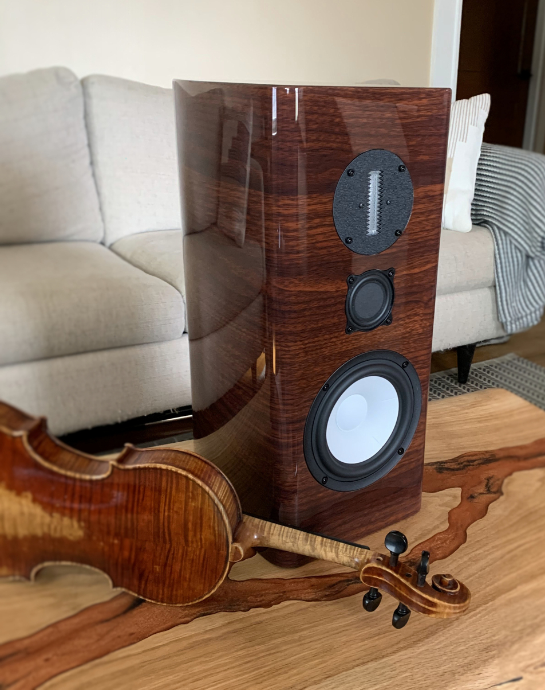

The BMR Monitor

There are many choices for high quality bookshelf speakers at less than $2,000 a pair. These offerings tend to be smaller 2-way designs with limited bass reach and restricted horizontal dispersion. What has been missing is a 3-way design with deep bass response and drivers that offer true 180-degree frontal radiation. Our BMR Monitor fills that void. The RAAL true ribbon tweeter provides unparalleled horizontal dispersion and ruler flat response up to frequencies far above human hearing. The unique Balanced Mode Radiator midrange matches the broad dispersion of the RAAL tweeter, thanks to a shift from pistonic to a bending motion well below the crossover point. Finally, the ceramic SB Acoustics 6-inch woofer delivers a rare combination of deep bass extension and linear frequency response at higher frequencies. Useful bass response extends to 34 Hz, and the smooth upper end allows a second-order acoustic crossover that boosts sensitivity more than 2 dB over the previous BMR model. All of the rectangular BMR's are priced at $1,700/pair, plus shipping, and come in either piano black or rosewood cabinets. The curved cabinets are available in rosewood for $1,900/pair or ebony for $2,000/pair. The ebony finish is the same that is offered for the HT Tower. All BMR cabinets are furniture quality and come with magnetic grills. We are currently out of the rectangular rosewood cabinets. To order, please email Dennis atinfo@philharmonicaudio.com.|
“
The Philharmonic BMR Monitor is one of the best deals going in bookshelf speakers. At $1,700, the BMR outclasses everything I’ve heard in its price range. The BMR has room-filling dispersion, superb tonal balance, and a low-end reach that belies its size. Budget-minded audiophiles simply need to hear the BMR.
”
Audioholics Review, June 14, 2023 |
Measurements
(On Axis and Off Axis Horizontally, One Meter Anechoic)
On Axis

20 Degrees Off Axis

30 Degrees Off Axis

45 Degrees Off Axis

60 Degrees Off Axis

70 Degrees Off Axis

90 Degrees Off Axis

Specifications
| Tweeter | RAAL 64-10X OEM |
| Midrange | Balanced Mode Radiator 2.5" |
| Woofer | SB Acoustics 6" Ceramic |
| Frequency Response | 36 Hz - 20kHz (+ / - 2db) Anechoic |
| Sensitivity | 86.5 dB (2.83v/1M) |
| Box Alignment | Bass Reflex |
| Dimensions | 20" H x 8" W x 12-1/2" D |
| Weight | 32 lbs each |
| Impedance | 4 Ohms |